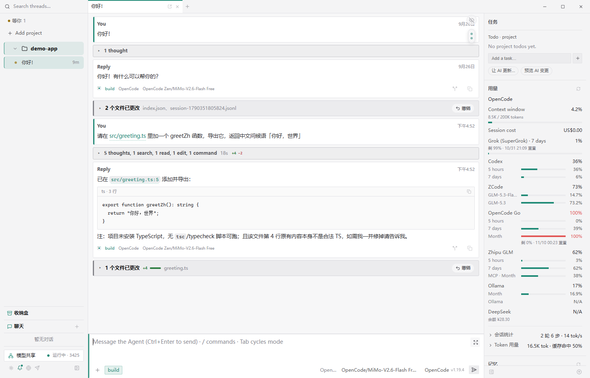
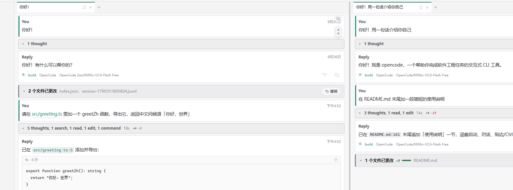
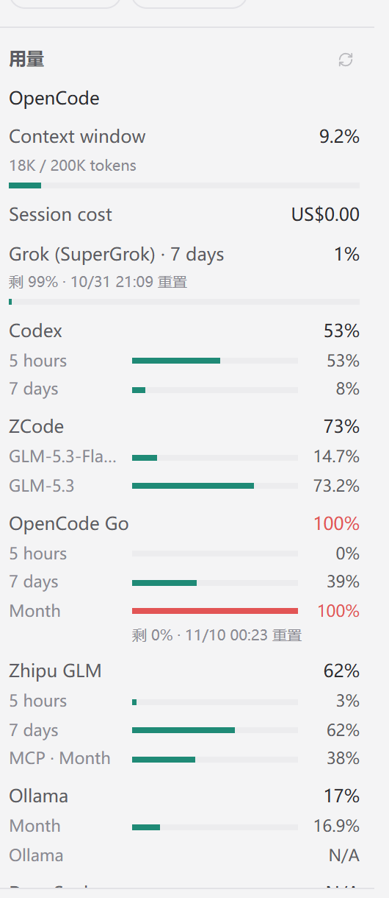
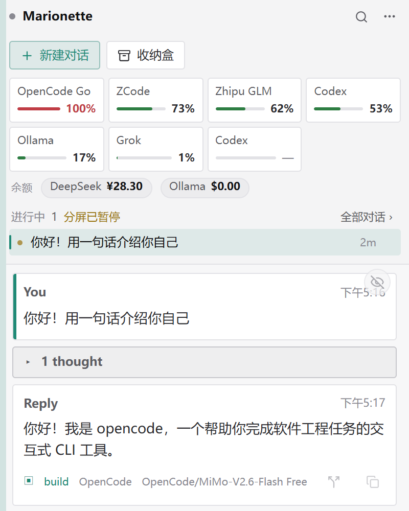
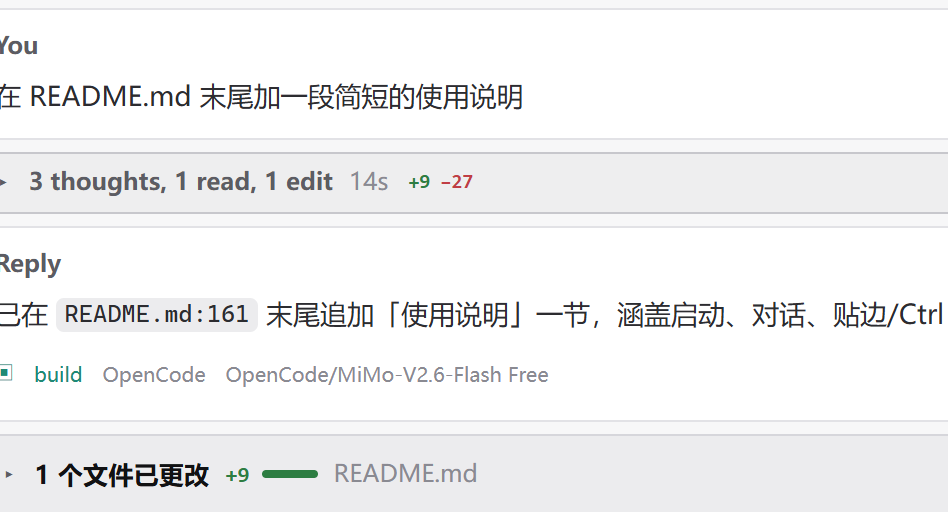

Codex、Claude Code、Grok、ZCode、DeepSeek 都活在终端里。Marionette 把它们请进同一个桌面窗口：统一启动、切换与记录，模型与记忆共享，每一轮改动清清楚楚。
本地运行 · 数据不出机器 · 便携版免安装

Agent 生于命令行，不必困在命令行里。
基于 ACP 协议接入，开箱即用。会话以标签页并列，最多四格分屏同屏对比，也可以把任意对话撕成独立窗口。懒启动、能力协商、权限请求，都替你处理妥当。

Key 与订阅只录入一次，本地引擎把同一个模型共享给每个 Agent：上下文窗口、图片能力自动对齐，不会静默降级。各家的用量与订阅窗口，右栏一张面板看清。

窗口贴近屏幕边缘，就收成一条淡轨。鼠标一碰即滑出，离开片刻自动收回；全屏播放与演示模式下绝不弹出。关掉主窗，它退到边上继续待命——会话与引擎都还在跑。

回合结束即生成交付卡：碰过哪些文件、增删多少行，数据直接来自 git 内容树，不是估算。思考与工具调用折叠成一张摘要卡，想看细节再展开。

文件、文件夹、链接随手拖进来，需要时再拖进输入框。多 Agent 共用的中转台，重复内容自动去重。
出门在外，手机上收进展、批权限、回一句话，会话照常推进。跑完的回复带全文，长文自动分片。
同一套 MCP 服务与 Skills 喂给每个 Agent，不用逐个配置。适配器能力差异自动协商。
跳任意对话或项目、新建会话、贴边停靠、切主题——键盘两下到位，手不用离开键盘。
便携版免安装，解压后双击 Marionette.exe 即可运行。
自动检测本机已装的 CLI 与登录状态，没有的以后随时加。
像平时一样写需求。切换、记录、交付卡，交给 Marionette。
下载解压，把第一个会话拖进舞台。
Windows 10 / 11 · x64 · 便携版 · 免安装